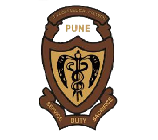
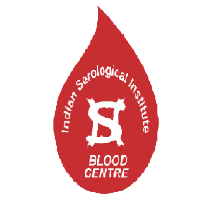

About Us
Through BLOOD-D, we have saved countless lives indirectly and have inspired thousands of students and members of the community to donate blood and experience the satisfaction of saving lives and improving the health of others. It only takes one generous donation to help save someone's life so donate blood to keep the world pulsating.
Why should we donate blood?
It helps in Developing new Blood cells and one's Psychological upliftment also have many health benefits such as-
Mainains weight
Help preventing premature ageing
Lower cholestrol levels
BLOOD-D March 2023
Highest number of donors at two-day blood donation campaign in Pune.
VIT ranks highest among all Pune colleges.
602
Number of donors
(VITians and non-VITians)
352
Day-1 count
250
Day-2 count
Frequently Asked Questions
- Any person with good health and who is currently not suffering from any disease.
- Donor should take no medications,drinking,and smoking before 24 hours of blood donation.
- Weight should be above 45kg for girls and 50kg for boys.
- The haemoglobin level should be minimum 12.5.
- Anyone can donate blood after 3 months of previous donation.
- Girls cannot donate blood during menstruation.
- Get plenty of sleep the night before blood donation.
- Eat a healthy meal.
- Avoid eating fatty food.
- Drink an extra 2 glasses of water and other fluids before the donation.
- Relax:Make yourself comfortable.
- Stay calm:Take a deep breath.
- Be strong:There will be a little pain or no pain during needling.
- Take rest:After donating the pint of blood take a good rest for atleast 10 mins.
- Maximise your iron intake by eating foods like eggs,green beans,green leafy vegetables like spinach & jaggery.
- Nuts like black raisins,dates,almond and anjeer are other fantastic options in terms of foods to increase haemoglobin fast.
Our Collaborators
Blood Banks

Sasoon Hospital
